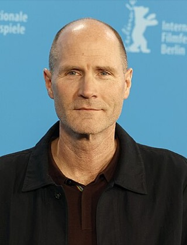

Queen at Sea
From the festival
Play Trailer What happens when love is no longer enough to protect someone you care for? Amanda (Juliette Binoche), already struggling with her own life, finds herself at the center of an impossible family dilemma. Her mother Leslie (Anna Calder-Marshall) is living with advanced dementia, while her devoted stepfather Martin (Tom Courtenay) refuses to accept that their intimate life must come to an end. When Amanda calls the authorities, a deeply private question becomes a matter for the police, carers, and institutions, setting the family on a path none of them can control. Sara (Florence Hunt), Amanda’s teenage daughter, brings another perspective as three generations of women navigate very different stages of love, desire, independence, and loss. Writer/director Lance Hammer handles this delicate subject with remarkable restraint, never offering easy answers or clear heroes or villains. The central trio finds humor, tenderness, frustration, and love in the smallest moments. Winner of the Berlinale Silver Bear Jury Prize, Queen at Sea also earned Silver Bears for Anna Calder-Marshall and Tom Courtenay. —João Federici
- Directed by
- Lance Hammer
- Country
- USA / UK
- Year
- 2026
- Running time
- 121 minutes
- Language
- English, French
- Premiere
- West Coast Premiere
- With
- Anna Calder-Marshall, Florence Hunt, Juliette Binoche, Tom Courtenay
Source: Festival website programme (MVFF49): Wayback Machine copy; Festival film page: Wayback Machine copy; Poster from Wikipedia (de): Queen at Sea